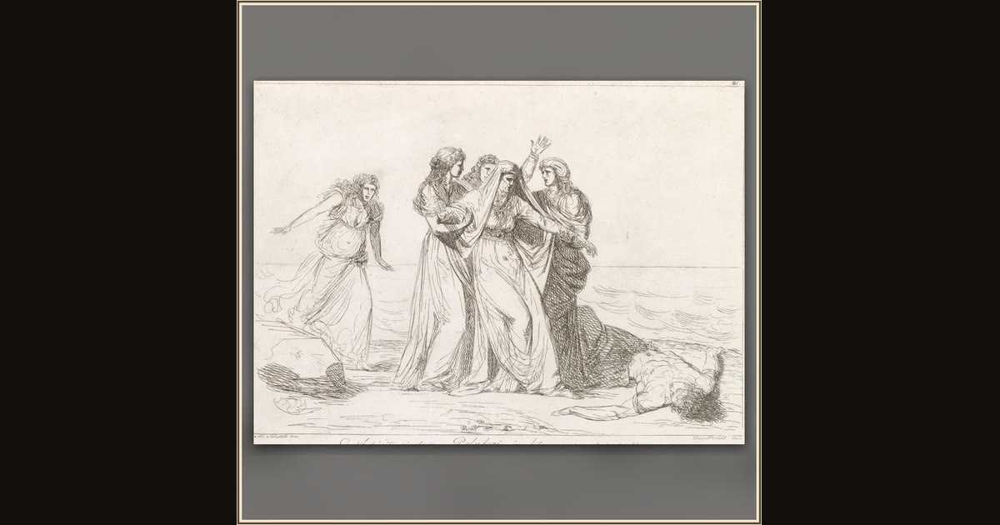

Hecuba vindt het aangespoelde lichaam van haar zoon Polydorus
Damiano Pernati, after design by Luigi Sabatelli (I); publisher Pietro Paulo Montagnani · 1804 · rijksmuseum
Women support the veiled, stricken Hecuba while her son's body lies on the beach. Here she recognises the corpse of Polydorus, whom the Thracian was meant to keep safe (681–684). Explore its place in Euripides's Plays, Hecuba, line 671.